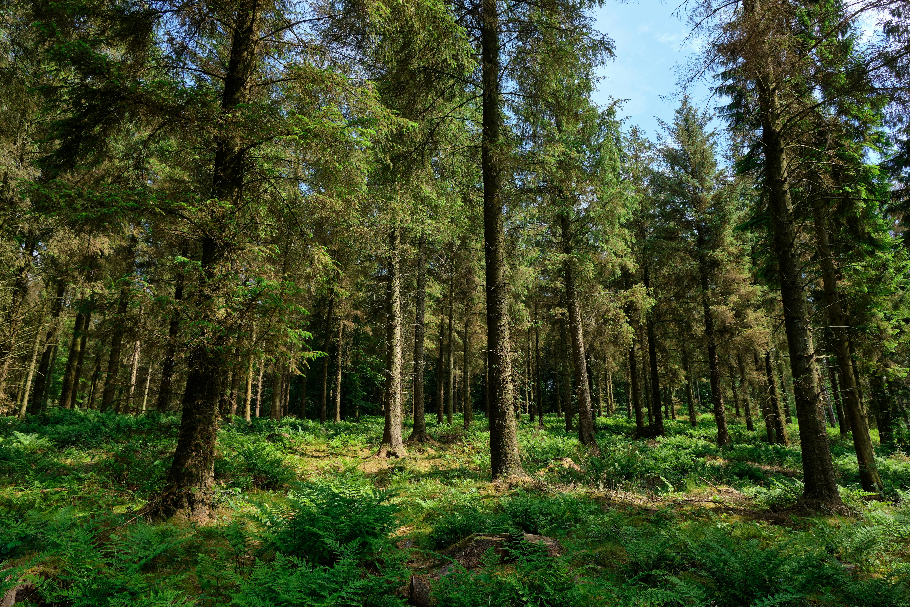

Seals n Sables
Seals n Sables



Canopy Cover
Dense canopy helps maintain cool, sheltered understory.

Understory Paths
Brush and logs create pathways for quiet movement.

Seasonal Foods
Berries and fruit supplement their carnivorous diet.